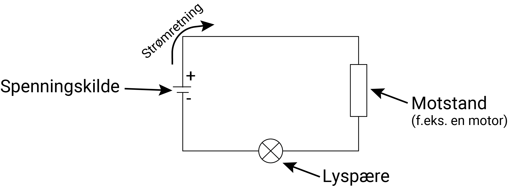
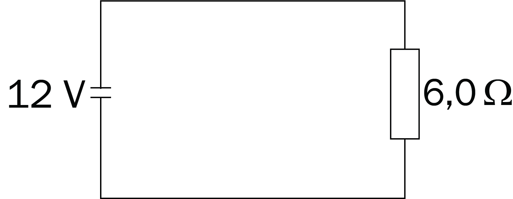
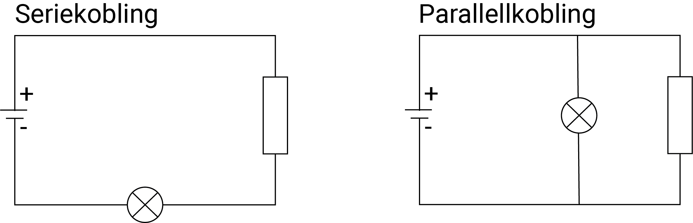
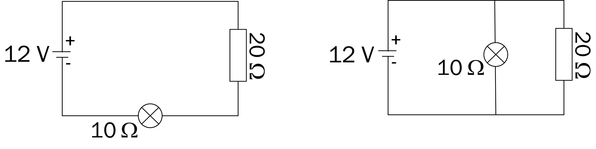
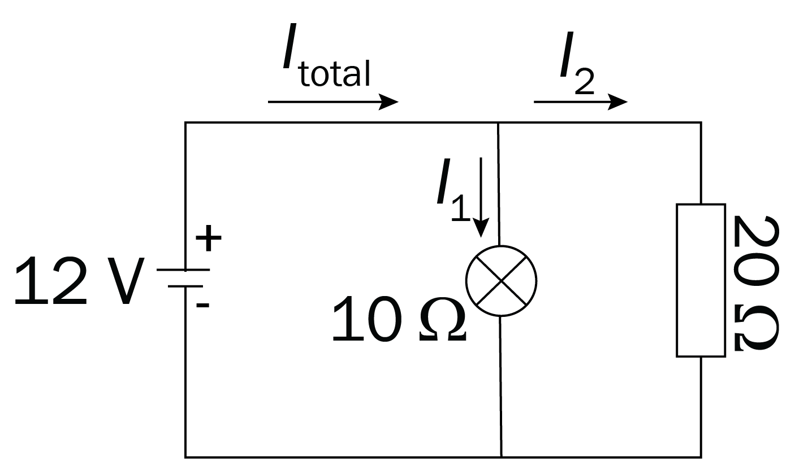
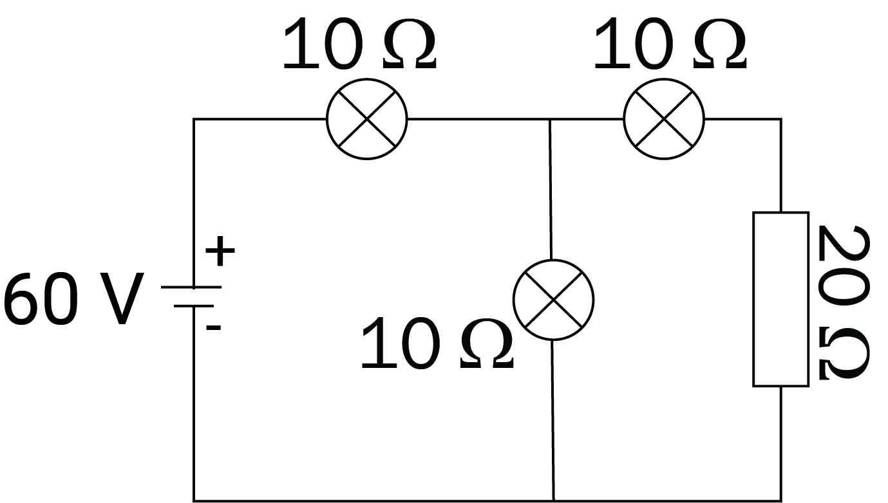
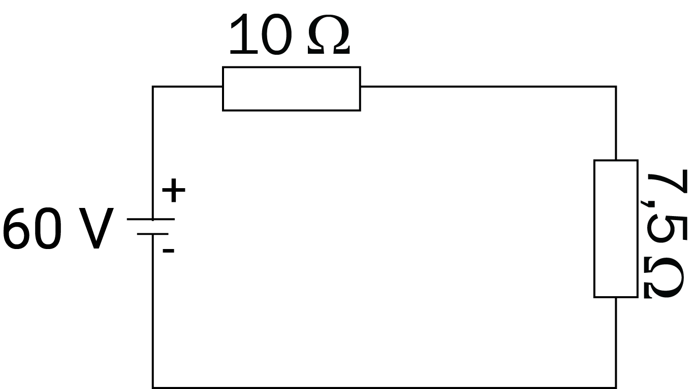
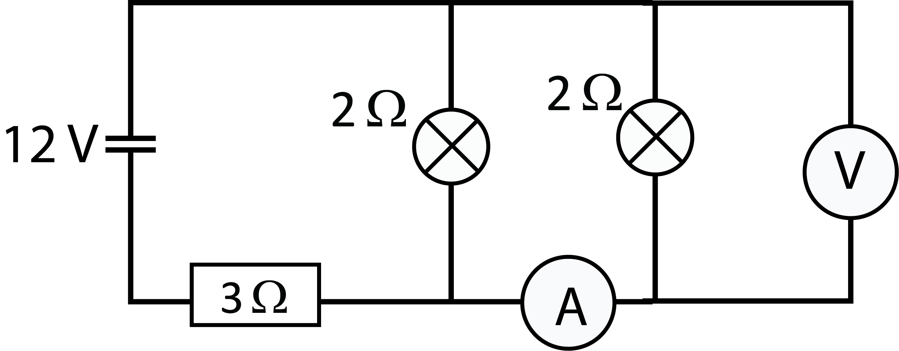
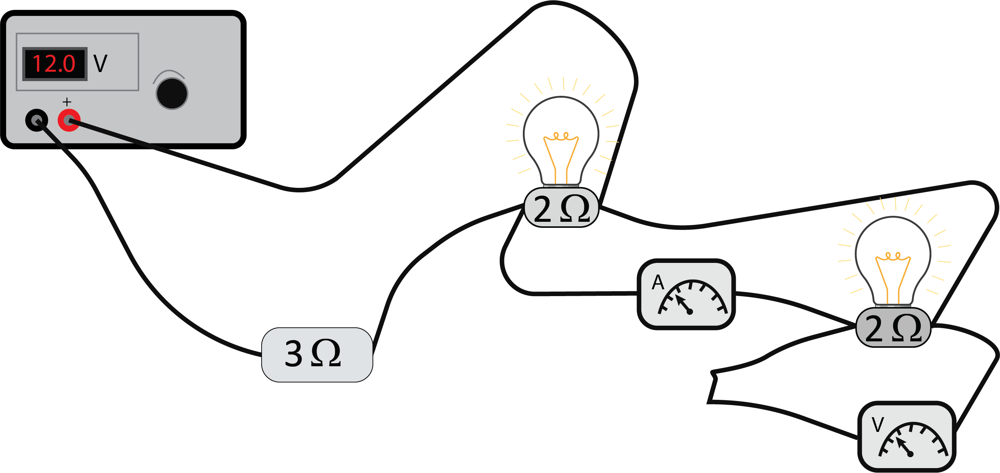

Elektrisitet
Du skal ha kompetanse om
- definisjonen av elektrisk spenning \(U = \frac{W}{q}\)
- Ohms lov \(U = RI\)
- Kirchhoffs 1. og 2. lov
- effektomsetning i elektriske kretser
Elektrisk spenning
Elektrisk spenning \(U\) er definert som arbeid \(W\) per ladning \(q\):
\[ U = \frac{W}{q} \]Spenning er altså et mål på arbeidet som kan bli gjort på elektriske ladninger. Spenning måles i volt (V), som er det samme som joule (J) per coulomb (C), hvor coulomb er benevningen til elektriske ladninger.
Eksempel
Elektroner har masse \(9\text{,}11 \cdot 10^{31} \text{ kg}\) og ladning \(1\text{,}60 \cdot 10^{-19} \text{ C}\).
Et elektron akselereres fra ro av en spenning \(U = 1000 \text{ V}\).
Bestem hvor stor fart elektronet får.
Endringen av den kinetiske energien til elektronet er lik arbeidet som blir gjort på det, noe som gir
\[ \begin{align} \Delta E_k &= W = qU \\ \frac{1}{2} mv^2 &= qU\\ v &= \sqrt{\frac{2qU}{m}} = \sqrt{\frac{2 \cdot 1\text{,}60 \cdot 10^{-19} \cdot 1000}{9\text{,}11 \cdot 10^{-31}}} = 1\text{,}87 \cdot 10^7 \text{ m/s} \end{align} \]Elektriske kretser
En elektrisk krets består av en (eller flere) spenningskilde(r), f.eks. et batteri, som "dytter" elektroner rundt i kretsen. I tillegg kan vi ha ulike komponenter i kretsen, f.eks. motorer eller lyspærer.

Vi sier at strømmen går fra \(+\) til \(-\) på spenningskilden, men det er egentlig ingenting som går denne veien; Det er elektroner som går fra \(-\) til \(+\).
Elektrisk strøm \(I\) er mengde elektrisk ladning \(q\) som passerer et tverrsnitt av en ledning per tidsenhet \(t\), altså:
\[ I = \frac{q}{t} \]Strøm måles i ampere (A), som er det samme som coulomb (C) per sekund (s).
Ohms lov: \(U = R\cdot I\), hvor \(U\) er spenning, \(R\) resistans (motstand) og \(I\) strømstyrke.
Eksempel
En strømkrets består at en spenningskilde på \(12\; \text{V}\) og en motstand på \(6\text{,}0\;\Omega\).

Bestem strømstyrken gjennom kretsen.
Eksempel
Bestem antall elektroner som går ut av batteriet hvert sekund i kretsen i forrige eksempel.
Effektomsetning: Effekten i en komponent i en krets er \(P = U \cdot I\). Dette er et mål på hvor mye energi komponenten bruker ("omsetter") fra spenningskilden.
Eksempel
Bestem effekten i motstanden i forrige eksempel.
Dette betyr at motstanden bruker 24 joule per sekund.
Serie- og parallellkobling: Figurene under 👇 viser en serie- og en parallellkobling.

Kirchhoffs 1. lov: Summen av strømmer inn i et punkt er lik summen av strømmene ut av punktet.
Kirchhoffs 2. lov: Summen av spenningene i en lukket sløyfe er null.
Eksempel

Bestem strømstyrken gjennom hver av komponentene i hver av kretsene.

Kirchhoffs 2. lov gir at spenningsfallet over hver av motstandene er det samme som polspenningen. Ohm's lov \(U = RI\) gir da \[ I_1 = \frac{U_1}{R_1} = \frac{12}{10} = 1\text{,}2 \text{ A} \;\;\text{og}\;\;I_2 = \frac{U_2}{R_2} = \frac{12}{20} = 0\text{,}60 \text{ A} \]Total resistans i en seriekobling: \( R_{\text{total}} = R_1 + R_2 + \cdots + R_n \).
Total resistans i en parallellkobling: \( R_{\text{total}} = \left( \frac{1}{R_1} + \frac{1}{R_2} + \cdots + \frac{1}{R_n} \right)^{-1} \).
Eksempel

Bestem effekten batteriet leverer.

hvor den totale resistansen i parallellkoblingen er gitt ved \begin{align} R_{\text{parallell}} &= \left( \frac{1}{10} + \frac{1}{10 +20} \right)^{-1} \\ &= \left( \frac{3}{30} + \frac{1}{30} \right)^{-1} = \left( \frac{4}{30} \right)^{-1} = \frac{30}{4} = 7\text{,}5 \,\Omega \end{align}Strømstyrken ut av batteriet er \[ I = \frac{U}{R} = \frac{60}{10 + 7\text{,}5} = \frac{60}{17\text{,}5} = 3\text{,}4 \, \Omega \] som gir effekten \[ P = U \cdot I = 60 \cdot 3\text{,}4 = 204 \text{ W} \]
Kobling av elektriske kretser
Når vi kobler kretser på LAB'en bruker vi- batteri (eller spenningskilde, som fungerer som et batteri)
- ledninger
- motstander (f.eks. lyspærer)
- amperemeter (for å måle strøm)
- voltmeter (for å måle spenning)
Spenningsfall måles med et \(\textit{voltmeter}\). Dette måler energitapet per ladning over en motstand, og det kobles i parallell over/rundt motstanden. Motstanden i voltmeteret er (tilnærmet) uendelig stor, slik at ikke det går noe strøm gjennom voltmeteret.
Eksempel

Koble kretsen og mål spenningen og strømmen. Sammenlign målingene med teoretiske verdier.

Den totale teoretiske resistansen i kretsen er \[ R = 3 + \left( \frac{1}{2} + \frac{1}{2} \right)^{-1} = 3 + 1^{-1} = 3 + 1 = 4 \; \Omega \] Den totale teoretiske strømmen i kretsen er \[ I = \frac{U}{R} = \frac{12}{4} = 3 \text{ A} \] Siden lyspærene har like stor motstand og er koblet i parallell, fordeler strømmen seg likt gjennom dem. Dermed skal amperemeteret vise 1,5 A. Fra Ohm's lov får vi da at spenningsfallet over pæra er \( U = RI = 2 \cdot 1,5 = 3 \text{ V} \).
Sammenligninger mellom teori og praksis:
- Amperemeteret viser 1,3 A. Teoretisk strøm er 1,5 A.
- Voltmeteret viser 2,3 V. Teoretisk spenningsfall er 3 V.